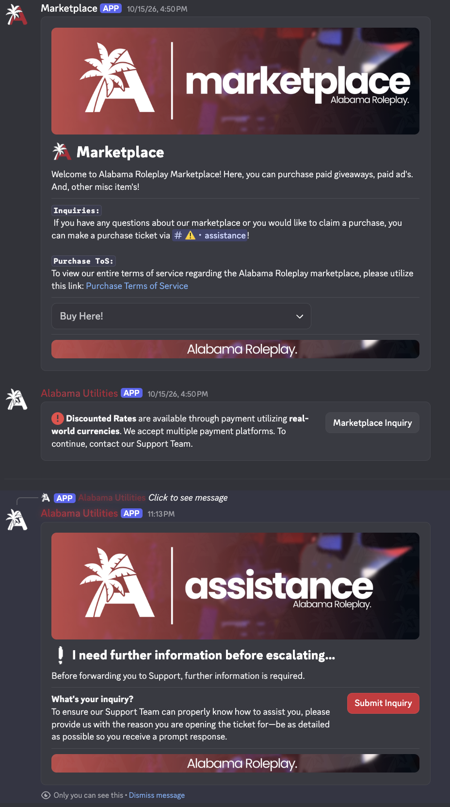

Discord bot platform
Python tooling for Discord communities, with marketplace and support workflows backed by authentication, permissions, and persistent data storage.
My role Built the bot end to end.
Built for communities totaling approximately 22,000 members across 13 servers.
Inside the build
The platform combines Python and the Discord API with FastAPI services. SQLite and SQLAlchemy handle persistence, with Alembic for database migrations.
Security work includes OAuth2 and JWT authentication, role based access control, and protections against destructive server actions.
Configurable permissions across servers
Different servers needed different staff roles without duplicating authorization logic. I centralized named permissions, stored role mappings per server, and reused shared checks across command modules. Configuration changes invalidate the cached mappings.
Used jishaku for live debugging and hot reloading during development and maintenance.
Community reach includes one server with 19,000 members, one with 700, and 11 additional servers. These figures describe combined membership.
